1. Começando
Instalar, entrar, escolher a aparência e a loteria, e atualizar os resultados.
1.1 O que você vê ao abrir
▶ Assistir ao vídeoA primeira tela é o Painel Inicial. Ele é aberto a todos: dá para olhar sem entrar na conta.
- 1
Na faixa de cima ficam as 11 loterias. Clique em uma para trabalhar nela.
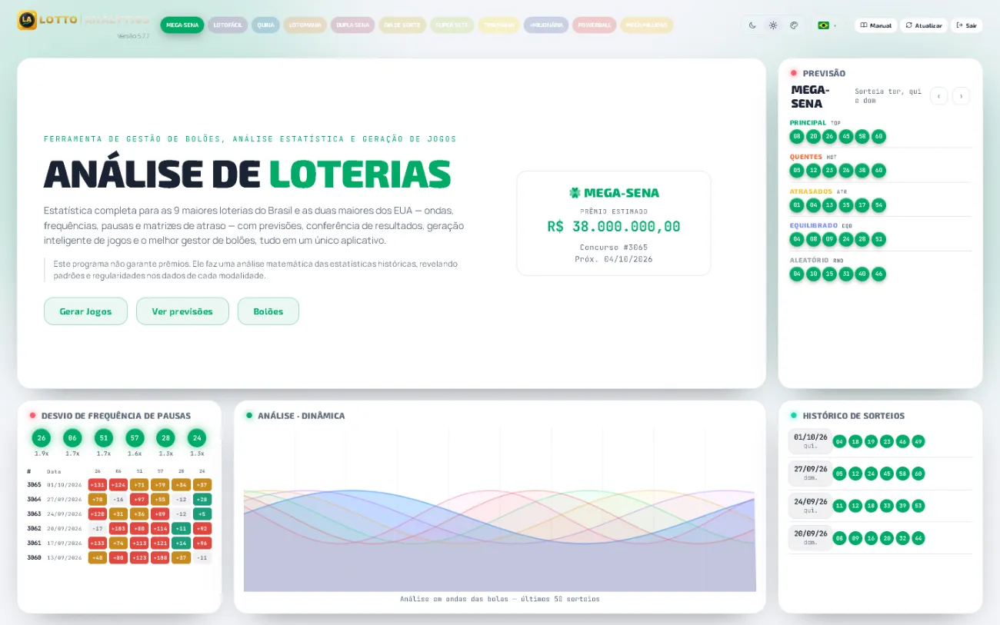
Painel Inicial: loterias no topo, prêmio estimado, previsão rápida, desvios e últimos sorteios. - 2
No centro está o prêmio estimado do próximo concurso. Os botões Gerar Jogos, Ver previsões e Bolões levam direto para essas áreas.
- 3
À direita aparece uma previsão rápida (muda sozinha de loteria a cada poucos segundos) e, embaixo, o histórico dos últimos sorteios.
Quer saber mais?
A previsão rápida do Painel Inicial é só uma amostra para ilustrar. A previsão de verdade, com estatística, fica na aba PREVISÃO de cada loteria (capítulo 2).
1.2 Instalar e atualizar o programa
▶ Assistir ao vídeoO programa é instalado no Windows uma vez. Depois ele se atualiza sozinho.
- 1
Abra o arquivo LottoAnalytics-Setup que você recebeu e siga a instalação. Ao terminar, abra o programa pelo ícone.
- 2
O número da versão fica sempre à vista, no canto de cima à esquerda, embaixo do logo.
- 3
Quando existe versão nova, o programa baixa em segundo plano (você continua trabalhando). Aparece o aviso "Atualização vX.Y.Z pronta para instalar". Clique em Instalar e Reiniciar.

Aviso de atualização pronta. - 4
O programa fecha, instala e abre de novo já na versão nova. Na primeira abertura aparece a janela Novidades da versão; clique em Continuar.
Novidades da versão.
Quer saber mais?
O programa procura versão nova ao abrir e depois a cada 30 minutos, enquanto estiver aberto. Você não precisa baixar nada à mão.
1.3 Entrar na sua conta
▶ Assistir ao vídeoOlhar o Painel Inicial é livre. Para abrir uma ferramenta (gerar jogos, bolões, estatísticas completas) é preciso entrar.
- 1
Sem estar logado, o Painel Inicial mostra dois botões no alto: Já tenho conta e Experimente Grátis.
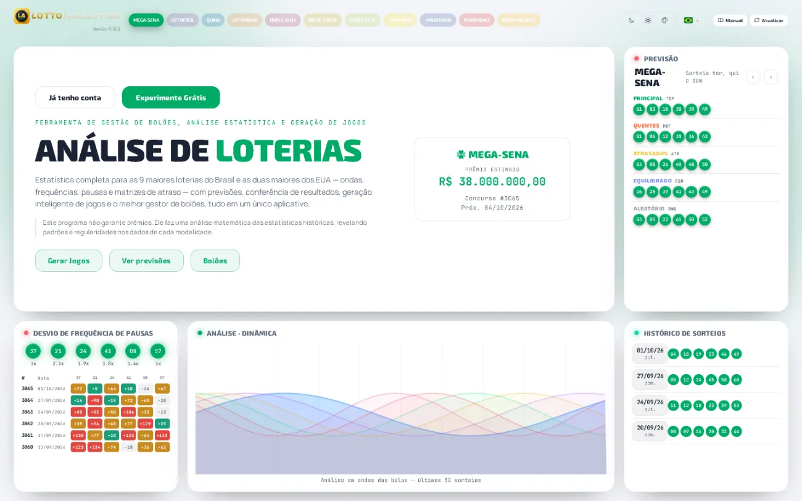
Painel Inicial sem login. - 2
Para entrar, escreva o e-mail e a senha e clique em Entrar.
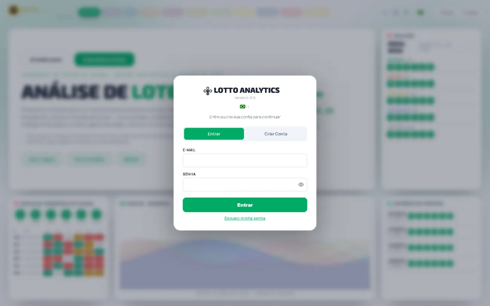
Janela de login. - 3
Primeira vez? Clique em Criar Conta, preencha os dados (nome, e-mail, senha, CPF, PIX, telefone, WhatsApp e endereço) e clique em Criar conta (10 dias grátis).
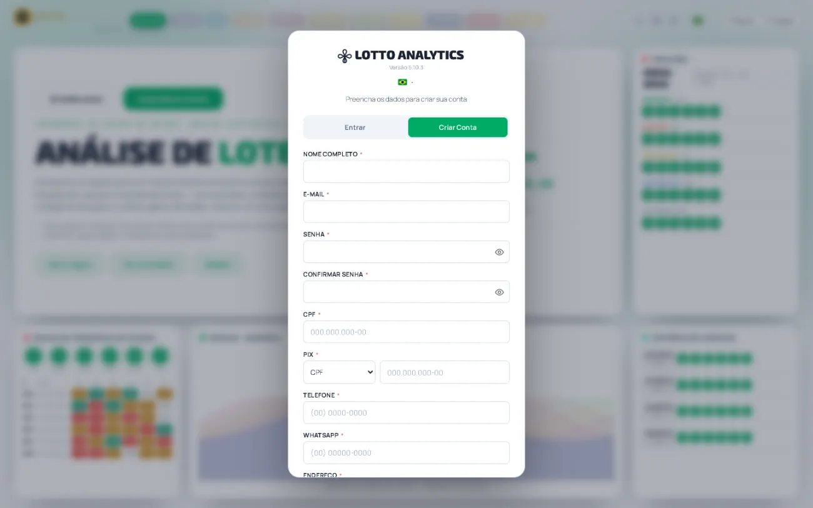
Criar conta. - 4
Esqueceu a senha? Em Entrar, clique em Esqueci minha senha.
Quer saber mais?
Depois de entrar, aparecem na barra de cima os botões Participante e Sair (e Admin, só para quem administra).
1.4 Tema (claro, escuro, colorido) e idioma
▶ Assistir ao vídeoTroque a aparência quando quiser. Isso não muda nenhum dado.
- 1
No alto, ao lado das loterias, ficam três botões: lua (tema escuro), sol (tema claro) e paleta (tema colorido). Clique no que preferir.

Botões de tema. - 2
Ao lado dos temas fica a bandeira. Clique nela e escolha o idioma: Português, English, Español ou Italiano.

Seletor de idioma. - 3
O programa lembra a sua escolha na próxima vez que abrir.
Quer saber mais?
O tema escuro é o padrão do programa; este manual usa o tema claro para ficar mais fácil de ler e imprimir. O tema colorido muda também as cores dos gráficos.
1.6 Atualizar os resultados
▶ Assistir ao vídeoO botão Atualizar (canto de cima à direita) busca os sorteios novos de todas as loterias de uma vez.
- 1
Clique em Atualizar.
- 2
Abre o Relatório de Atualização: quantas loterias foram atualizadas, se houve erro e quanto tempo levou. Embaixo, uma linha por loteria com o concurso e se acumulou ou quantos ganhadores teve.
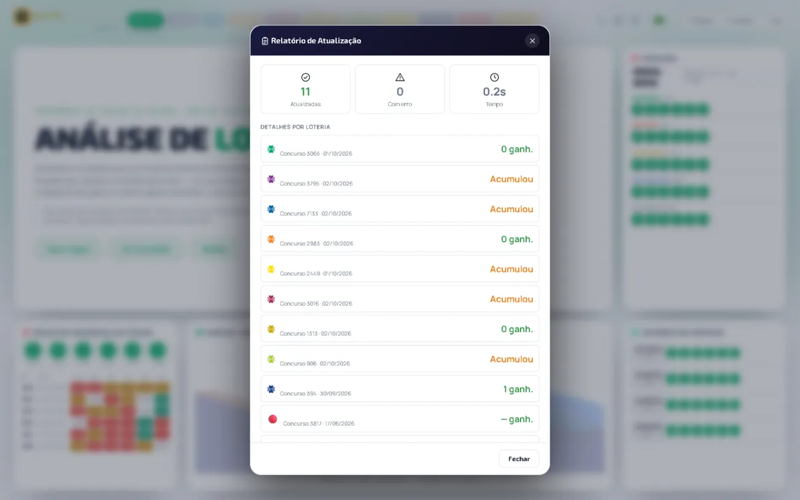
Relatório de Atualização. - 3
Clique em Fechar.
Quer saber mais?
O programa busca primeiro no banco do próprio LottoAnalytics e, se precisar, nas fontes da Caixa. Sorteios de semana costumam sair a partir das 21h (horário de Brasília). Quando o resultado sai antes do detalhamento oficial, os números aparecem com um aviso e o prêmio por faixa é completado depois.
Se algo não funcionar
A loteria não mostra o sorteio de hoje.
Clique em Atualizar de novo mais tarde. Se a Caixa ainda não publicou, o programa não tem o que mostrar.
2. Resultados e estatísticas
Cada aba olha o mesmo histórico de sorteios por um ângulo diferente. Nenhuma prevê o futuro: todas mostram o que já aconteceu.
2.1 RESULTADO — o último sorteio
▶ Assistir ao vídeoÉ a aba que abre primeiro. Mostra o último concurso.
- 1
No topo: o número do concurso, a data e as dezenas sorteadas.
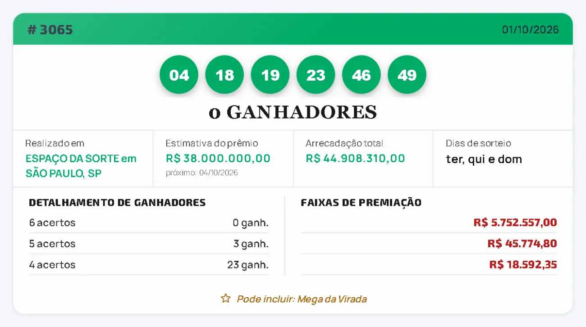
Aba RESULTADO. - 2
Abaixo: o detalhamento de ganhadores e as faixas de premiação (quantos acertaram e quanto cada um levou), o prêmio estimado do próximo concurso e o dia do próximo sorteio.
2.2 RESULTADOS — a lista de todos os concursos
▶ Assistir ao vídeoTodos os sorteios já feitos, do mais novo para o mais antigo. É a base de todas as outras abas.
- 1
Cada linha é um concurso: número, data e as dezenas marcadas numa grade de 1 até o último número.
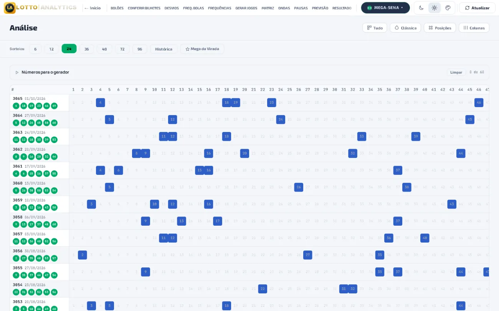
Aba RESULTADOS. - 2
No alto, os botões 6, 12, 24, 36, 48, 72, 96 e Histórica escolhem quantos concursos entram na conta. O botão marcado em verde é o escolhido.
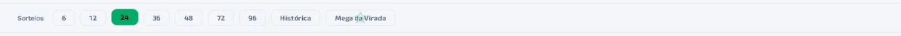
Escolha do período.
Quer saber mais?
O período vale para todas as abas de estatística: se você escolher 24, os gráficos olham os 24 últimos sorteios. Histórica usa todos os sorteios guardados.
2.3 Sorteios especiais (Mega da Virada e outros)
▶ Assistir ao vídeoQuatro loterias têm sorteio especial de data comemorativa. Para elas aparece um botão com estrela.
- 1
Mega-Sena: Mega da Virada. Quina: Quina de São João. Lotofácil: Lotofácil da Independência. Dupla Sena: Dupla Sena de Páscoa.
- 2
Clique no botão com a estrela (ao lado do Histórica). A tela passa a mostrar só esses sorteios especiais.
Filtro de sorteios especiais ativado.
2.4 FREQUÊNCIAS — quem saiu mais
▶ Assistir ao vídeoUm gráfico de barras com quantas vezes cada número saiu no período escolhido.
- 1
Cada barra é um número. A linha pontilhada é a frequência "teórica": quanto cada número teria saído se tudo fosse perfeitamente igual.
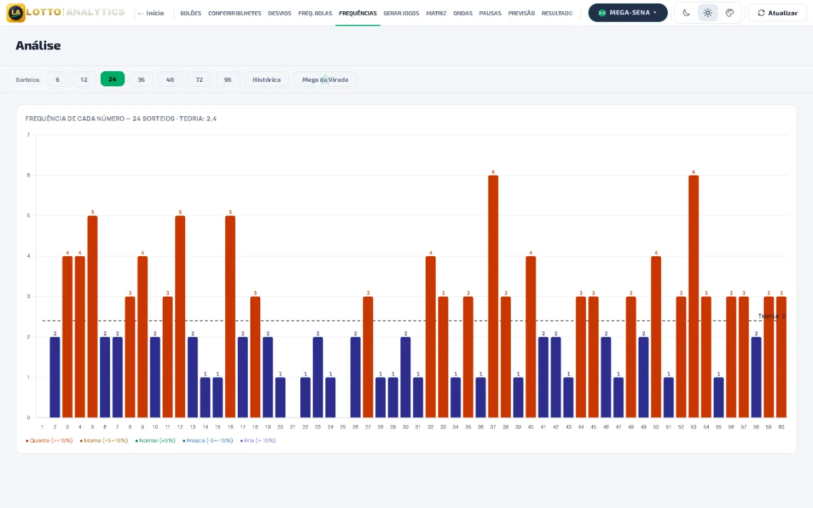
Aba FREQUÊNCIAS. - 2
Barra bem acima da linha = número quente (saiu mais que o normal). Bem abaixo = frio. A legenda embaixo explica as cores.
2.5 FREQ. BOLAS — frequência por posição
▶ Assistir ao vídeoEm vez de olhar todos os números juntos, olha cada posição do sorteio: a 1ª bola, a 2ª, a 3ª...
- 1
Cada cor é uma posição (Bola 1 até Bola 6, na Mega-Sena). A linha mostra com que frequência cada número aparece naquela posição.
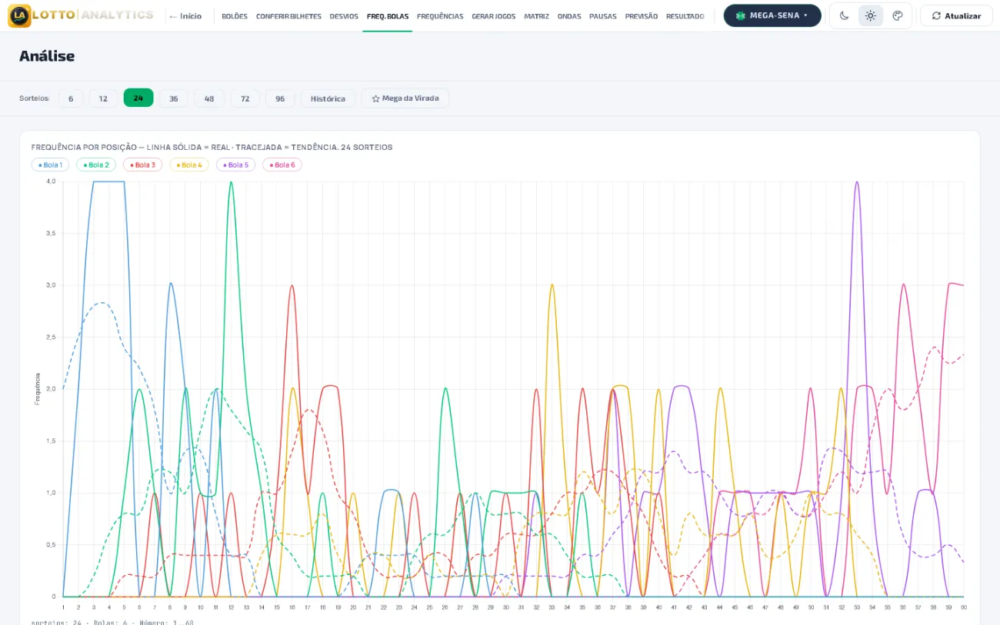
Aba FREQ. BOLAS.
Quer saber mais?
As bolas são contadas em ordem crescente (a 1ª é a menor do concurso). Serve para ver se algum número "gosta" de aparecer numa posição específica.
2.6 ONDAS — o sobe e desce dos sorteios
▶ Assistir ao vídeoMostra, sorteio a sorteio, o valor de cada bola ao longo do tempo.
- 1
Cada linha colorida é uma posição de bola. O eixo de baixo traz as datas dos sorteios. Dá para ver a "onda": quando o valor sobe e quando desce.
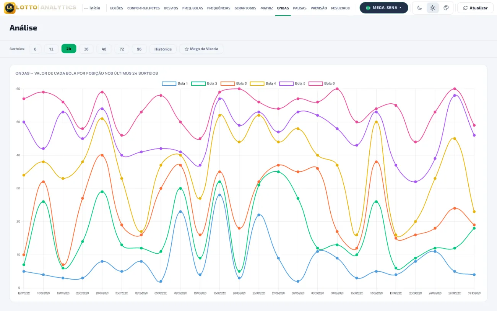
Aba ONDAS.
2.7 DESVIOS — quem está acima ou abaixo do normal
▶ Assistir ao vídeoCompara a frequência real de cada número com a esperada.
- 1
Barras para cima (laranja/vermelho) = o número saiu mais que o esperado. Barras para baixo (azul/roxo) = saiu menos.
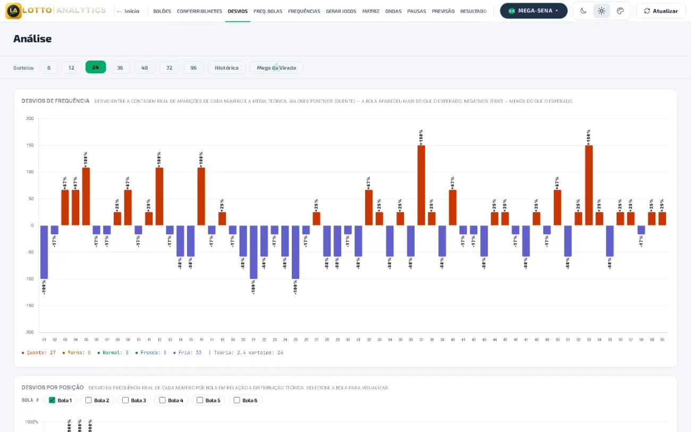
Aba DESVIOS. - 2
Cada número recebe uma "temperatura": Quente, Morna, Normal, Fresca ou Fria. Mais abaixo, a mesma conta é feita por posição de bola.
2.8 PAUSAS — quanto tempo cada número demora a voltar
▶ Assistir ao vídeoUma "pausa" é o número de sorteios entre uma aparição e a seguinte.
- 1
No alto, as bolinhas de todos os números. Abaixo, um cartão por número: o gráfico mostra com que frequência ele volta depois de 1, 2, 3... sorteios. A linha é a curva teórica.
Aba PAUSAS. - 2
Em cada cartão aparece o atraso atual: há quantos concursos aquele número não sai.
2.9 MATRIZ — números que saem juntos
▶ Assistir ao vídeoUm mapa de calor que cruza os números mais frequentes entre si.
- 1
Cada quadradinho mostra quantas vezes dois números saíram juntos no mesmo concurso. Cor mais forte = mais vezes.
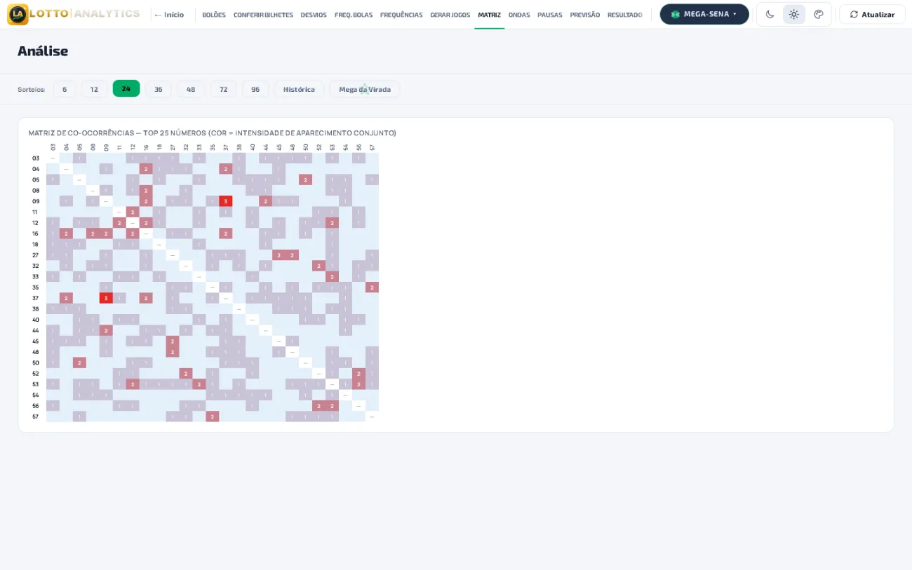
Aba MATRIZ.
2.10 PREVISÃO — sugestões para o próximo sorteio
▶ Assistir ao vídeoCombina frequência, atraso e tendência e propõe jogos prontos para o próximo concurso.
- 1
Há três variantes. Em cada uma, cinco tipos de sugestão: Previsão principal, Números quentes, Atrasados, Equilibrada e Aleatória.
Aba PREVISÃO. - 2
Em cada cartão: Mais variantes gera outras combinações, Salvar guarda os jogos e Conferir compara com o último resultado.
2.11 Loterias com extras (trevos, time, mês, colunas)
▶ Assistir ao vídeoAlgumas loterias sorteiam algo além das dezenas. O programa mostra tudo.
- 1
+Milionária: 6 dezenas e 2 trevos.
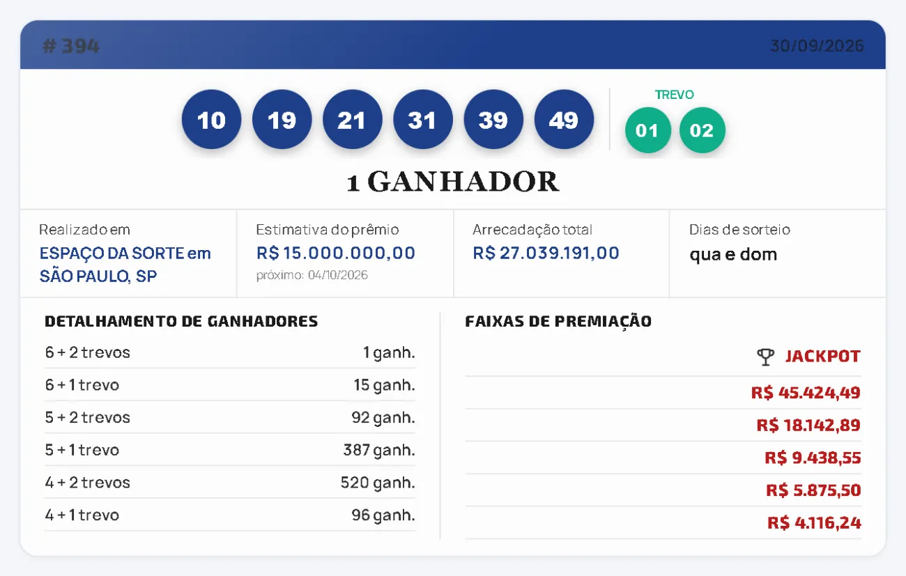
+Milionária. - 2
Timemania: 7 dezenas e o Time do Coração.
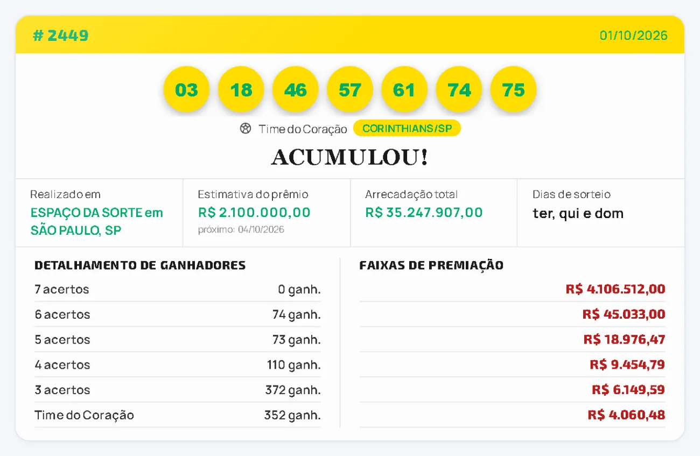
Timemania. - 3
Dia de Sorte: 7 dezenas e o Mês de Sorte.
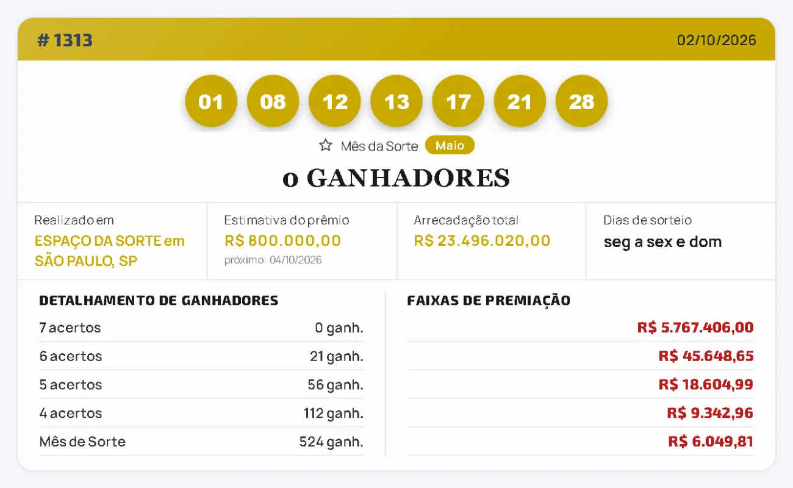
Dia de Sorte. - 4
Super Sete: um número (0 a 9) para cada uma das 7 colunas.
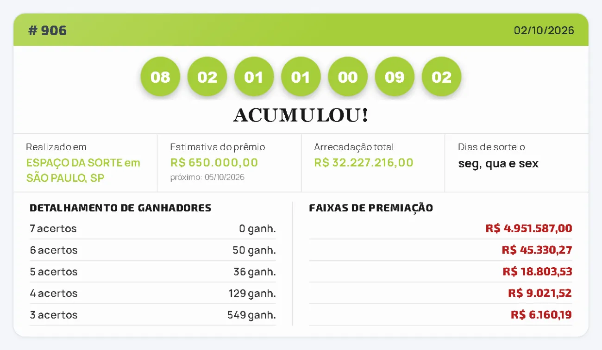
Super Sete.
3. Gerando jogos
A aba GERAR JOGOS monta as apostas que você vai fazer na lotérica (ou imprimir no volante).
3.1 O painel de geração
▶ Assistir ao vídeoO painel tem três partes numeradas: 1 Parâmetros do jogo, 2 Filtros e 3 Gerar.
- 1
Abra a aba GERAR JOGOS da loteria que você quer.
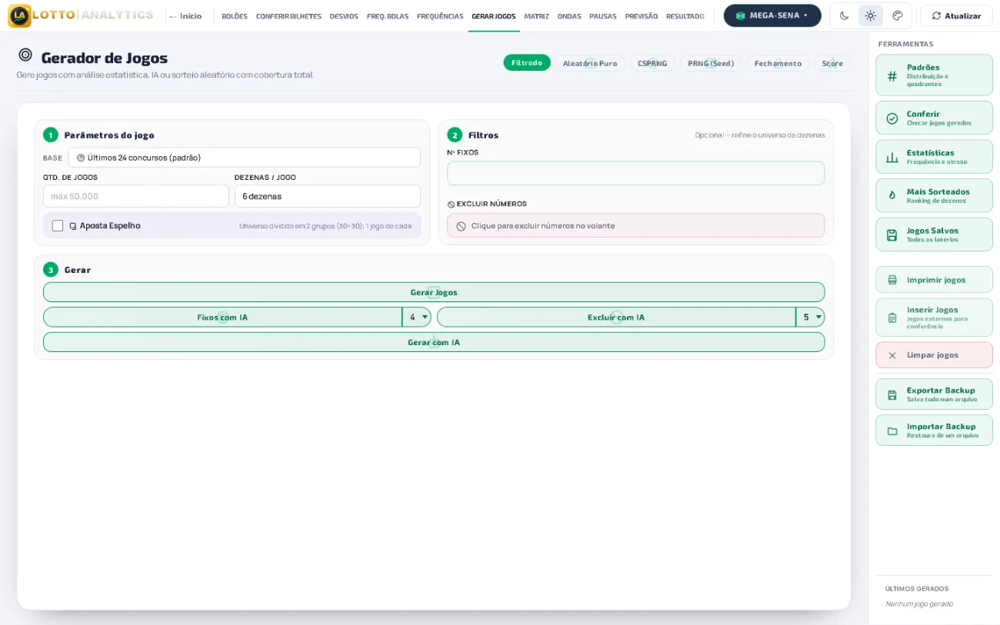
Painel Gerador de Jogos. - 2
Em Base, escolha quantos concursos o programa deve olhar (últimos 24 é o padrão).
- 3
Em Qtd. de jogos, escreva quantos jogos quer (até 50.000). Em Dezenas / jogo, escolha quantos números cada jogo terá.
- 4
No alto, ao lado do título, ficam os modos: Filtrado, Aleatório Puro, CSPRNG, PRNG (Seed), Fechamento e Score.
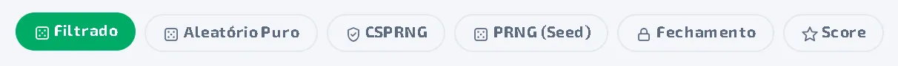
Modos de geração.
Quer saber mais?
Os 6 modos usam o mesmo painel. Filtrado e Score usam estatística; Aleatório Puro, CSPRNG e PRNG (Seed) são sorteio puro; Fechamento gera muitos jogos para cobrir uma faixa de números.
3.2 Gerar seus primeiros jogos
▶ Assistir ao vídeoO caminho mais curto: escolher a quantidade e clicar em Gerar Jogos.
- 1
Escreva a quantidade em Qtd. de jogos (por exemplo, 10).
- 2
Clique no botão grande Gerar Jogos.
- 3
Abre o Resultado da Geração: quantos jogos foram gerados, o custo total, para qual concurso eles valem e a lista de jogos, cada um com uma estrela e a pontuação (score).
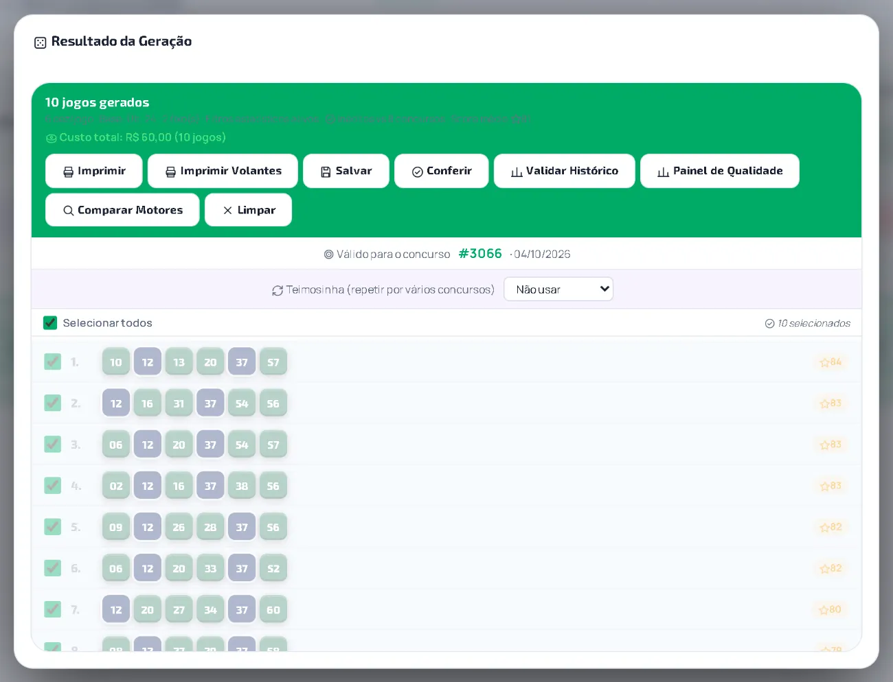
Resultado da Geração. - 4
Marque ou desmarque os jogos que quer usar (Selecionar todos marca todos). Os botões do alto são: Imprimir, Imprimir Volantes, Salvar, Conferir, Validar Histórico, Painel de Qualidade, Comparar Motores e Limpar.
Quer saber mais?
O score é uma nota de 0 a 100 que resume o quanto o jogo combina com as estatísticas do período escolhido. Nota alta não significa mais chance de ganhar.
3.3 Números fixos e números excluídos
▶ Assistir ao vídeoFixos entram em todos os jogos. Excluídos nunca entram.
- 1
Em 2 Filtros, clique na caixa Nº FIXOS. Abre um volante com todos os números, coloridos do mais quente (laranja) ao mais frio (azul).
Escolha dos números fixos. - 2
Clique nos números que quer fixar e depois em Confirmar. (Limpar desmarca tudo.)
- 3
Para excluir, clique na caixa EXCLUIR NÚMEROS, marque os números (ficam vermelhos) e clique em Confirmar.
Escolha dos números excluídos. - 4
As escolhas aparecem nas duas caixas. Agora é só clicar em Gerar Jogos.
Filtros prontos.
Quer saber mais?
O número pequeno em cada quadradinho do volante é a pontuação daquele número no período escolhido. Quanto mais quente (laranja), maior.
3.4 Aposta Espelho
▶ Assistir ao vídeoPara cada jogo, o programa faz um jogo gêmeo com números diferentes.
- 1
Em 1 Parâmetros do jogo, marque a caixa Aposta Espelho. O texto ao lado explica como o universo é dividido (por exemplo, "em 2 grupos 30+30; 1 jogo de cada").
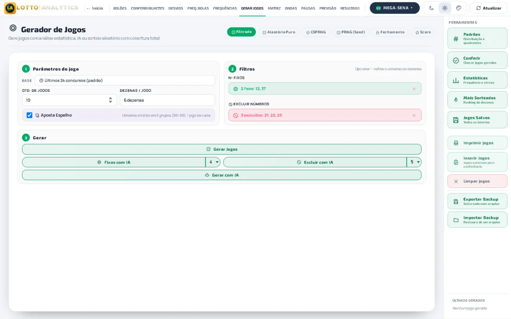
Aposta Espelho marcada. - 2
Clique em Gerar Jogos. A quantidade pedida já conta o jogo principal e o espelho.
3.5 Teimosinha — repetir os jogos
▶ Assistir ao vídeoRepete o(s) mesmo(s) jogo(s) em vários concursos seguidos.
- 1
No Resultado da Geração, procure a linha Teimosinha (repetir por vários concursos).
- 2
Escolha o número de concursos (as opções são as mesmas do volante da Caixa). O programa mostra quais concursos serão cobertos.
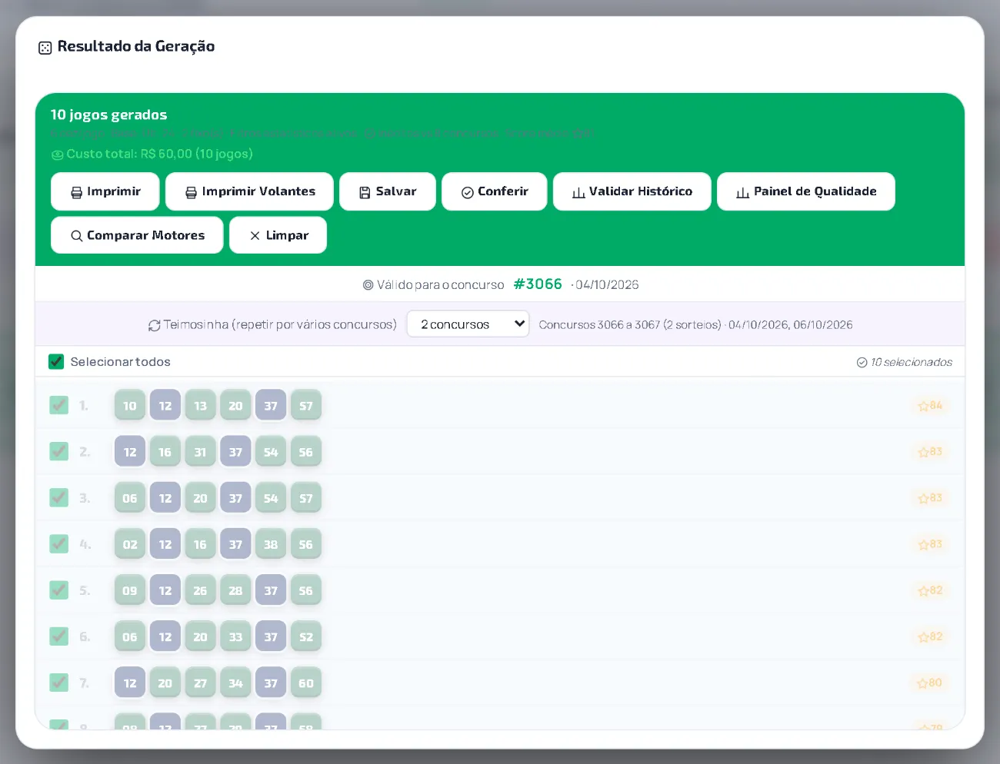
Teimosinha com 2 concursos.
3.6 Os modos de geração
▶ Assistir ao vídeoTroque o modo clicando no botão no alto do painel. O restante do painel continua igual.
- 1
Filtrado (padrão): aplica filtros estatísticos básicos sobre o período escolhido.
- 2
Aleatório Puro: sorteia como uma urna, embaralhando todos os números e evitando repetir até esgotar o universo. Nenhuma estatística.
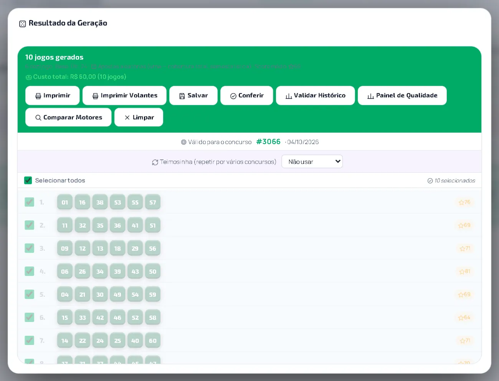
Resultado do Aleatório Puro. - 3
CSPRNG: igual ao Aleatório Puro, mas com um gerador de números criptograficamente seguro. Nunca se repete.
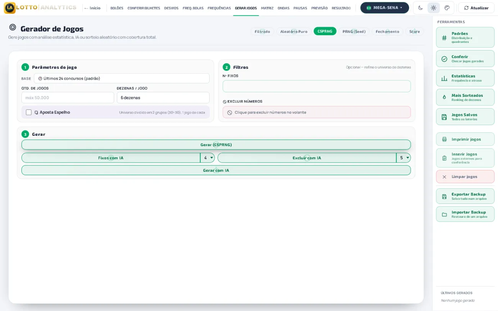
Modo CSPRNG. - 4
PRNG (Seed): a mesma semente gera sempre os mesmos jogos. Escreva uma semente (ou deixe em branco para o programa sortear uma e mostrá-la — anote-a se quiser repetir).
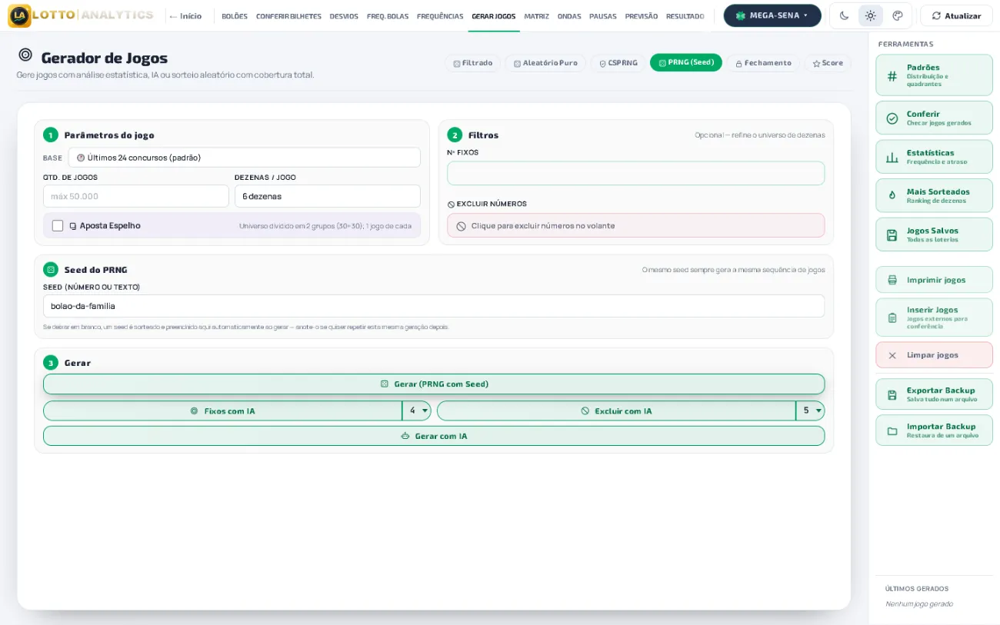
Modo PRNG (Seed). - 5
Fechamento: gera muitos jogos (até 50.000) cobrindo uma faixa de números, com rapidez.
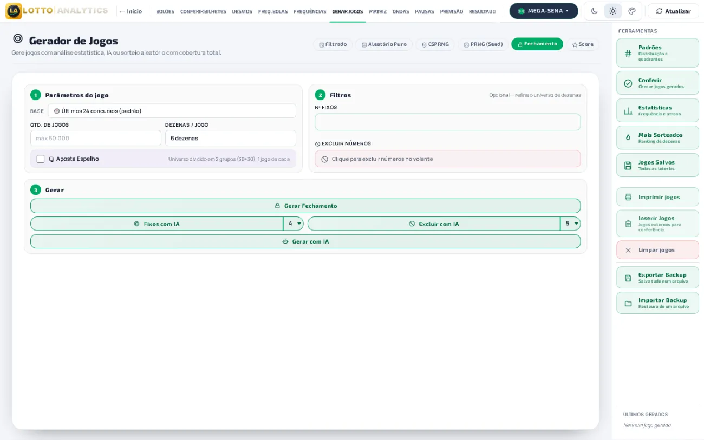
Modo Fechamento. - 6
Score: também é um fechamento, mas prioriza os números de melhor pontuação (frequência, atraso, tendência, correlação, ciclo, dispersão e equilíbrio de soma/pares). Escolha o Top de dezenas e clique em Ver Ranking por Score para ver a lista.
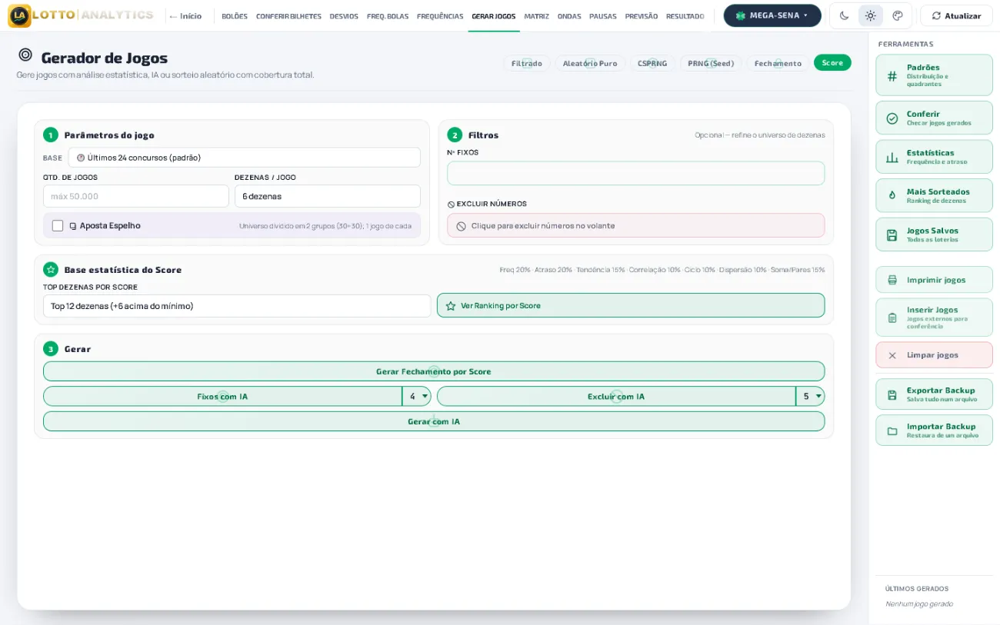
Modo Score. - 7
O Ranking por Score mostra as dezenas ordenadas pela pontuação.
Ranking por Score.
Quer saber mais?
Resumo: Filtrado e Score = com estatística. Aleatório Puro, CSPRNG e PRNG = sem estatística (só muda o gerador de números aleatórios). Use o que combinar com o seu gosto: o prêmio depende apenas do sorteio.
3.7 Gerar com IA
▶ Assistir ao vídeoO botão Gerar com IA cria jogos usando uma análise de 12 critérios ao mesmo tempo.
- 1
No painel, clique em Gerar com IA. Abre uma janela com a Quantidade de jogos e o botão Gerar.
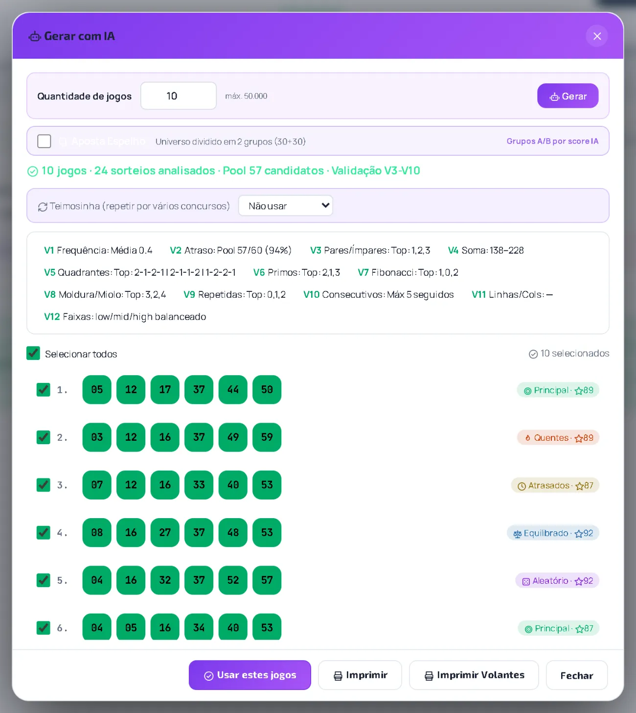
Janela Gerar com IA. - 2
Depois de gerar, a janela resume a análise (sorteios analisados, candidatos e validação) e lista os 12 critérios (V1 a V12): frequência, atraso, pares/ímpares, soma, quadrantes, primos, Fibonacci, moldura/miolo, repetidas, consecutivos, linhas/colunas e faixas.
- 3
Cada jogo vem com o seu perfil (Principal, Quentes, Atrasados, Equilibrado, Aleatório) e a pontuação. Clique em Usar estes jogos para levá-los ao Resultado da Geração.
- 4
Dentro dessa janela também dá para ligar Aposta Espelho e Teimosinha.
3.8 Fixos com IA e Excluir com IA
▶ Assistir ao vídeoO programa sugere quais números fixar ou excluir.
- 1
Em 3 Gerar, escolha ao lado de Fixos com IA quantos números quer fixar e clique no botão. Os números sugeridos aparecem preenchidos em Nº FIXOS.
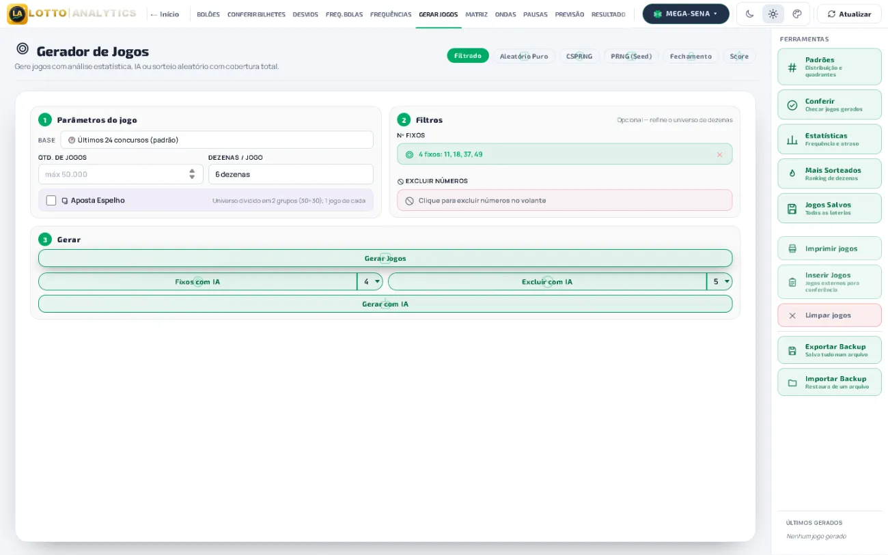
Fixos com IA. - 2
Do mesmo jeito, Excluir com IA preenche a caixa EXCLUIR NÚMEROS com os números que a análise sugere deixar de fora.
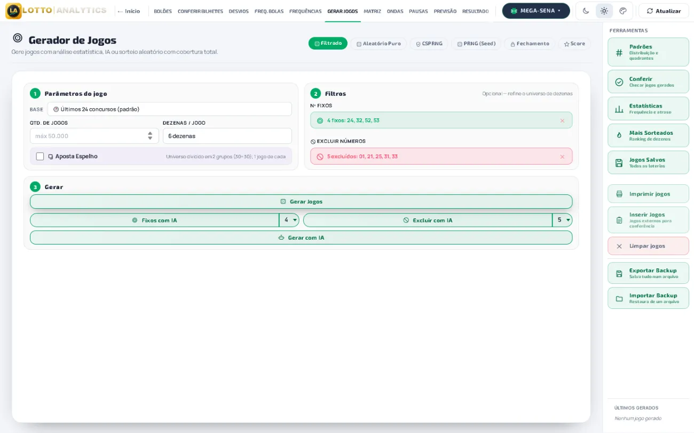
Excluir com IA.
3.9 Comparar Motores e Painel de Qualidade
▶ Assistir ao vídeoDuas ferramentas no Resultado da Geração para avaliar o lote.
- 1
Comparar Motores gera um lote pequeno com cada motor (Clássico e IA) e mostra a pontuação média de cada um lado a lado.
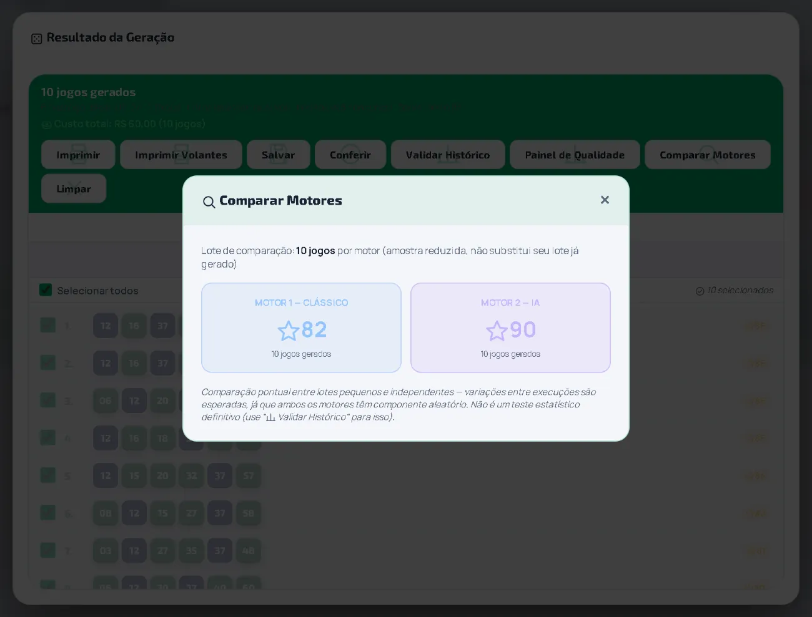
Comparar Motores. - 2
Painel de Qualidade resume o lote: média, melhor e pior pontuação, e a distribuição por faixa de score.
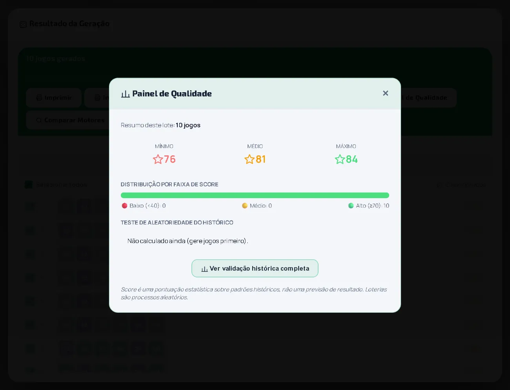
Painel de Qualidade.
Quer saber mais?
Validar Histórico testa o método contra concursos reais do passado. É só uma medida de como o método se comporta: não prevê o futuro.
3.10 Salvar os jogos ou ligá-los a um bolão
▶ Assistir ao vídeoDepois de gerar, escolha onde guardar os jogos marcados.
- 1
No Resultado da Geração, clique em Salvar. Aparece Onde salvar.
Onde salvar. - 2
Jogo Salvo: guarda numa lista sua. Vincular a um Bolão: escolha o bolão na lista e os jogos passam a fazer parte dele.
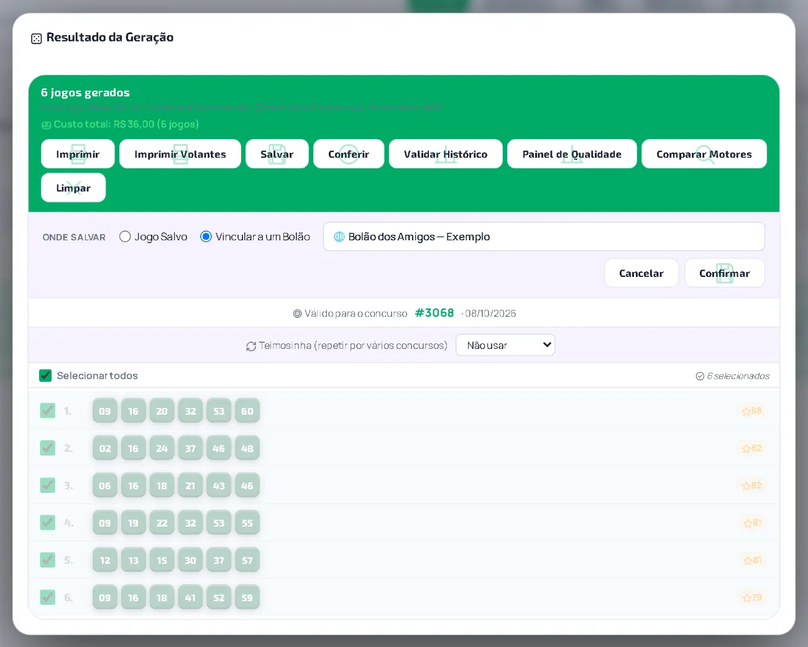
Vincular a um bolão. - 3
Clique em Confirmar.
Quer saber mais?
Os jogos salvos podem ser vistos depois no botão Jogos Salvos da barra de ferramentas (todas as loterias).
3.11 A barra de ferramentas da direita
▶ Assistir ao vídeoNa aba GERAR JOGOS (e em BOLÕES), a barra FERRAMENTAS fica sempre à direita.
- 1
Padrões: mostra a distribuição dos jogos já sorteados (pares/ímpares, quadrantes etc.).
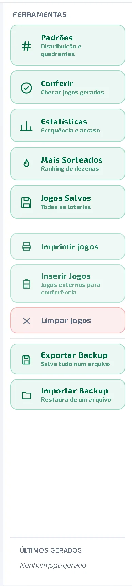
Barra FERRAMENTAS. - 2
Conferir: compara os jogos gerados com o último resultado. Estatísticas: frequência e atraso de cada número. Mais Sorteados: ranking das dezenas.
- 3
Jogos Salvos: todos os jogos guardados, de todas as loterias. Imprimir jogos: abre a janela de impressão.
- 4
Inserir Jogos: digite jogos de fora do programa para conferir. Limpar jogos: apaga os jogos da tela.
- 5
Exportar Backup salva tudo num arquivo; Importar Backup restaura de um arquivo.
3.12 Padrões, Estatísticas e Mais Sorteados
▶ Assistir ao vídeoTrês janelas de consulta rápida, com o mesmo seletor de período no alto.
- 1
Padrões: quantos concursos tiveram cada combinação de pares/ímpares e de quadrantes.
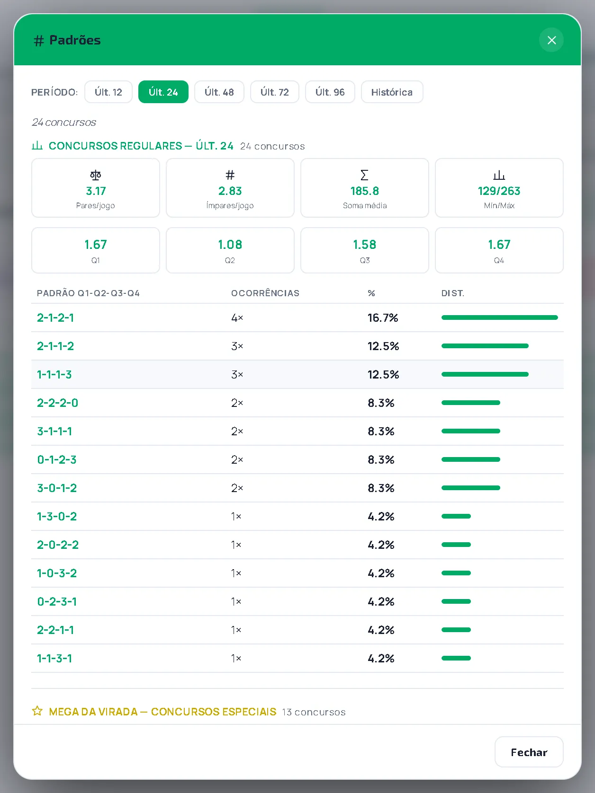
Padrões. - 2
Estatísticas: para cada número, quantas vezes saiu, a situação (quente, normal, fria) e o atraso.
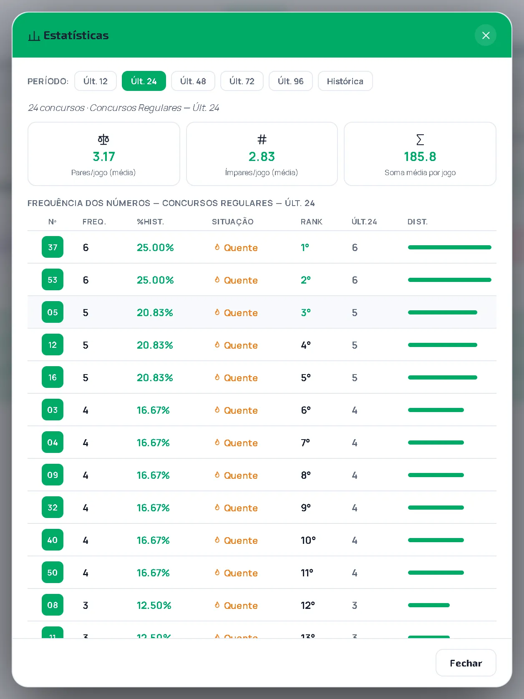
Estatísticas. - 3
Mais Sorteados: o ranking dos números que mais saíram.
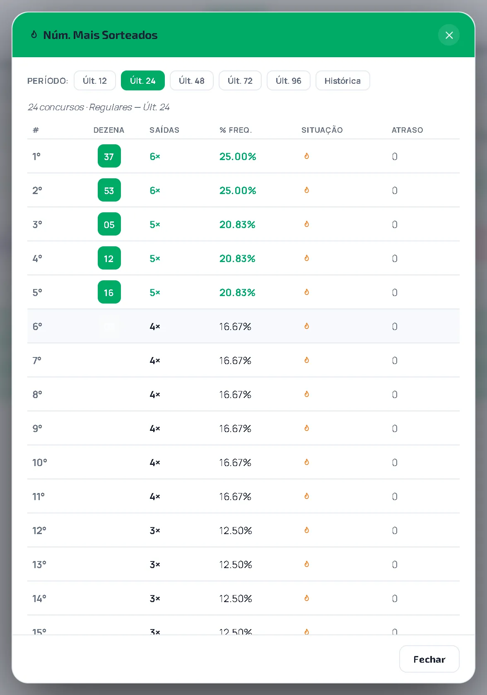
Mais Sorteados.
3.13 Inserir jogos para conferência
▶ Assistir ao vídeoFez um jogo na lotérica ou em outro lugar? Digite aqui para conferir.
- 1
Clique em Inserir Jogos. Escolha a loteria e marque as dezenas no volante da tela.
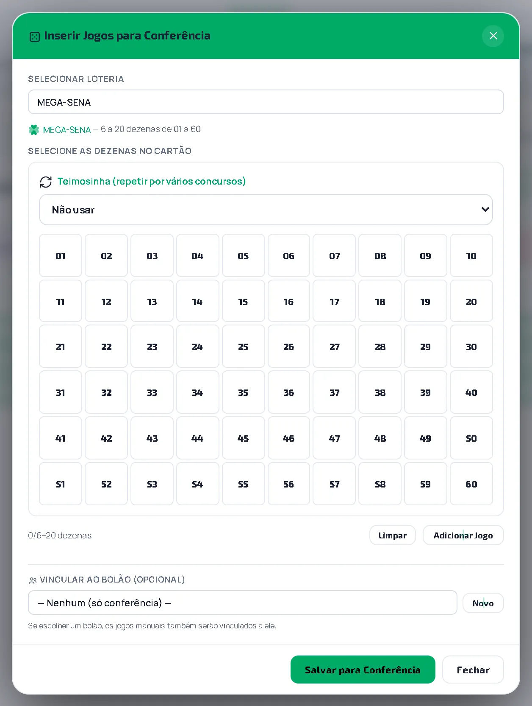
Inserir jogos para conferência. - 2
Clique em + Adicionar jogo e, no fim, em Salvar para Conferência. Se quiser, vincule ao bolão na mesma janela.
4. Conferir bilhetes
Ver quanto os seus jogos ganharam no último sorteio.
4.1 Conferir os jogos com o resultado oficial
▶ Assistir ao vídeoO programa compara cada jogo com o último resultado e diz em qual faixa ele caiu.
- 1
Gere, salve ou insira jogos. Depois clique na aba CONFERIR BILHETES (ou no botão Conferir do Resultado da Geração).
- 2
No alto aparecem o total ganho, quantos jogos foram premiados e quantos foram conferidos.
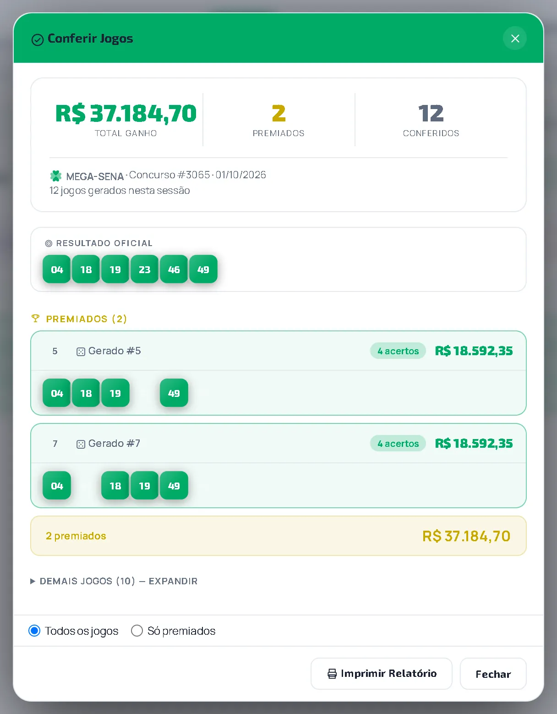
Conferir Jogos. - 3
Abaixo, o resultado oficial e a lista dos premiados, cada um com a faixa (por exemplo, 4 acertos) e o valor.
- 4
Escolha Todos os jogos ou Só premiados e clique em Imprimir Relatório se quiser em papel.
Quer saber mais?
O programa já conhece a tabela de prêmios de cada loteria, incluindo as regras especiais (+Milionária, Lotomania, Super Sete por coluna, Powerball e Mega Millions).
Se algo não funcionar
Aparece "Nenhum jogo gerado, salvo ou inserido para conferir".
Ainda não há jogos. Gere jogos ou use Inserir Jogos, e confira de novo.
5. Imprimir jogos e volantes
Levar os jogos para a lotérica em papel.
5.1 Imprimir a lista de jogos
▶ Assistir ao vídeoImprime os jogos em folha A4, ou salva em PDF.
- 1
Clique em Imprimir (no Resultado da Geração) ou em Imprimir jogos na barra de ferramentas.
- 2
Na janela Imprimir Jogos, leia o Destino: enviar para a impressora padrão do sistema, ou escolher Salvar como PDF na janela do Windows.
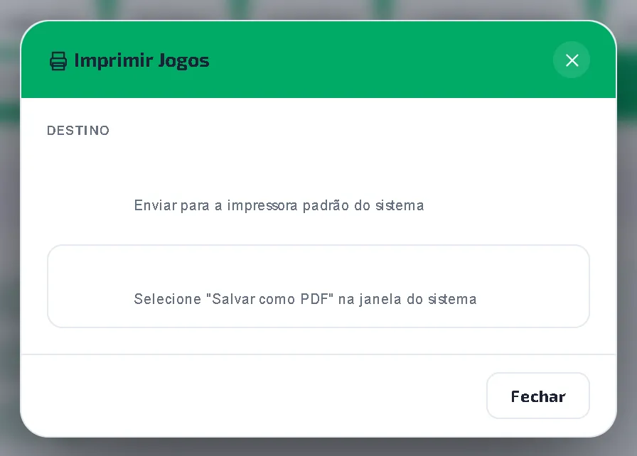
Imprimir Jogos.
5.2 Imprimir o volante oficial já preenchido
▶ Assistir ao vídeoO programa marca os números no desenho do volante da Caixa, em tamanho real.
- 1
No Resultado da Geração, clique em Imprimir Volantes.
- 2
Abre a prévia: os volantes com os números já marcados, com marcas de corte nos cantos para recortar no tamanho certo.
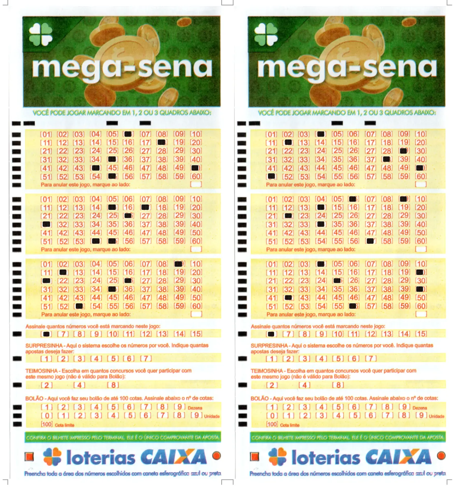
Prévia do volante da Mega-Sena. - 3
Imprima em folha A4 e leve os volantes à lotérica.
Quer saber mais?
Os volantes são impressos com margem mínima (5 mm) e a maioria das loterias cabe 3 por folha na horizontal (a +Milionária, 2 por folha na vertical). Os campos Surpresinha e Bolão do volante da Caixa ficam em branco de propósito: neles a Caixa escolhe por você.
6. Bolões
Reunir pessoas, dividir cotas, receber pagamentos, guardar os jogos e dividir o prêmio.
6.1 A tela de Bolões
▶ Assistir ao vídeoClique na aba BOLÕES. É a tela Bolões Multi-Loteria: um bolão pode ter jogos de várias loterias.
- 1
No alto, quatro botões: Criar Bolão, Bolões Salvos, Mensagens e Participantes.
Tela Bolões Multi-Loteria. - 2
Clique em Bolões Salvos para ver a lista dos seus bolões. Em cada um: Gerar Jogos, Abrir (editar) e Excluir.
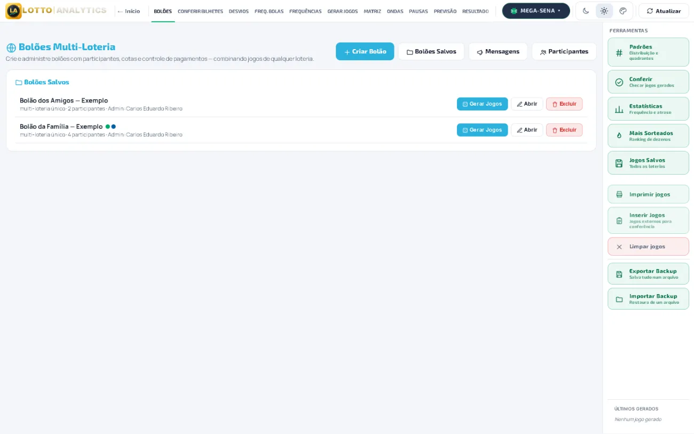
Bolões Salvos.
6.2 Criar um bolão
▶ Assistir ao vídeoClique em Criar Bolão e preencha o cartão Dados do Bolão.
- 1
Clique em Criar Bolão. O formulário abre vazio.
Novo bolão. - 2
Escreva o Nome do bolão (por exemplo, "Mega da Virada 2026").
- 3
Confira Data início da semana (SEG) e Data fim da semana (DOM). O programa já preenche; o botão com setas recalcula.
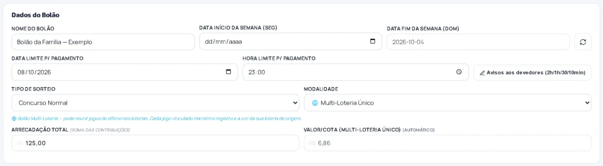
Dados do bolão. - 4
Em Tipo de sorteio, escolha Concurso Normal (ou um sorteio especial). Em Modalidade, deixe Multi-Loteria Único.
Quer saber mais?
A semana do bolão vai de segunda a domingo. A loteria do bolão só é definida quando o primeiro jogo é gerado ou vinculado a ele.
6.3 O administrador, o valor da cota e o rateio
▶ Assistir ao vídeoNo cartão Administrador ficam os seus dados e o valor da cota.
- 1
Preencha Nome, Telefone, Documento (CPF ou CNPJ) e PIX. O PIX é a chave onde os participantes vão pagar.
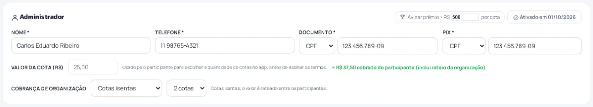
Cartão Administrador. - 2
Em Valor da cota (R$), escreva o preço de 1 cota. É o valor que o participante vê no celular antes de assinar os termos.
- 3
Em Cobrança de organização, escolha como cobrar o seu trabalho (Cotas isentas ou valor fixo) e quantas cotas.
- 4
O programa mostra em verde o valor final cobrado do participante, já com o rateio da organização.
Quer saber mais?
Exemplo: cota de R$ 25,00 com 2 cotas isentas do administrador, divididas entre os participantes ativos, vira R$ 37,50 por cota para quem participa. O texto verde se atualiza quando você mexe nesse cartão.
6.4 Prazo de pagamento e aviso automático
▶ Assistir ao vídeoDefina até quando os participantes podem pagar.
- 1
Em Data limite p/ pagamento e Hora limite p/ pagamento, escolha o dia e a hora.
- 2
Clique em Avisos aos devedores (2h/1h/30/10min) para personalizar o título e o texto do aviso. Em branco, o programa usa um texto padrão.
Texto do aviso de prazo.
Quer saber mais?
Com o prazo preenchido, o sistema avisa quem ainda não pagou 2 h, 1 h, 30 min e 10 min antes, por notificação no celular. O prazo de pagamento é antes de ativar o bolão e não é o encerramento do bolão (que é o fim da semana).
6.5 Adicionar participantes
▶ Assistir ao vídeoNo cartão Participantes, cada pessoa é uma linha.
- 1
Preencha a linha de cadastro: Nome do participante, E-mail, WhatsApp, CPF (opcional), Endereço, Chave PIX, quantidade de cotas e valor. Clique em + Adicionar.
Cartão Participantes: botões e linha de cadastro. - 2
A tabela mostra, por pessoa: cotas, contribuição (quanto pagou), meu saldo, participação (Ativo/Inativo), tipo, pagamento (Pago/Pendente) e o percentual da cota.
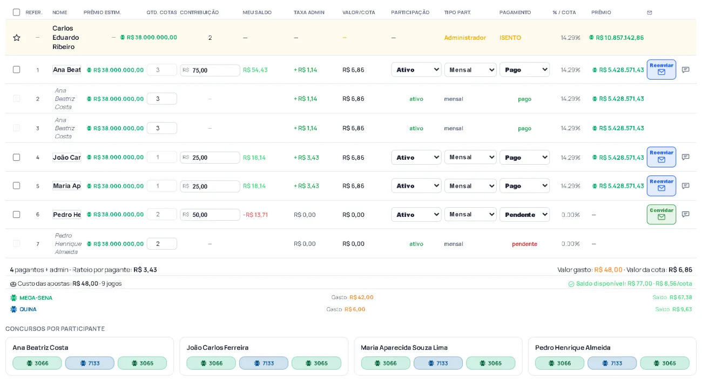
Tabela de participantes. - 3
Para marcar que alguém pagou, troque Pendente por Pago na coluna Pagamento.
- 4
Quando a pessoa ainda não aceitou o convite, o botão Convidar (ou Reenviar) manda o convite para ela entrar no app. O ícone de mensagem abre uma conversa com ela.
Quer saber mais?
Quem tem mais de 1 cota aparece em linhas extras em itálico (uma por cota), só para facilitar a leitura. Mudar o pagamento ou a participação atualiza na hora a Arrecadação total e o Saldo disponível.
6.6 Reaproveitar a lista de participantes
▶ Assistir ao vídeoO grupo é o mesmo toda semana? Salve a lista e carregue no próximo bolão.
- 1
Com o bolão pronto, clique em Salvar Lista. Aparece o aviso de que os participantes foram salvos para reuso.
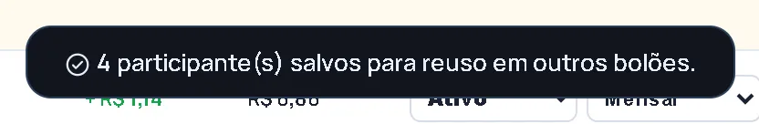
Lista salva. - 2
Em um bolão novo, clique em Carregar Lista Salva. Os participantes voltam com as mesmas cotas.
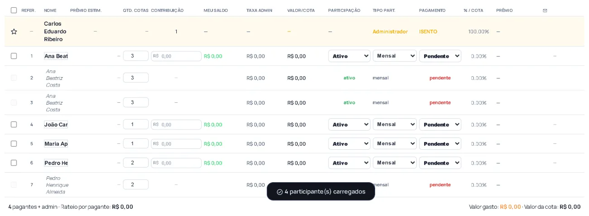
Lista carregada no bolão novo. - 3
O programa pergunta se quer transferir agora o saldo do bolão anterior para este. Clique em OK para sim ou Cancelar para depois.
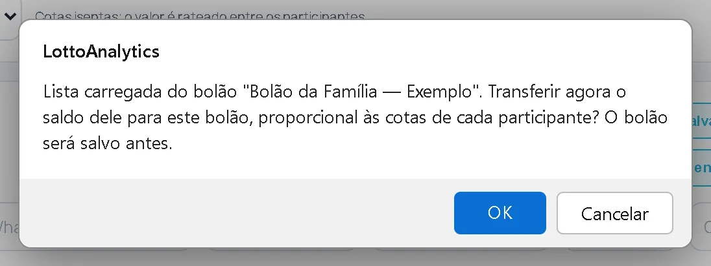
Oferta de transferir o saldo.
Quer saber mais?
Também dá para Importar Lista de um arquivo (nome, e-mail e WhatsApp) quando o grupo já existia em papel ou planilha.
6.7 Vincular os jogos ao bolão
▶ Assistir ao vídeoOs jogos do bolão podem vir do gerador, da previsão ou de Inserir Jogos.
- 1
No botão Gerar Jogos do cartão Participantes (ou em Bolões Salvos → Gerar Jogos), gere os jogos para esse bolão. Ou use Salvar → Vincular a um Bolão (capítulo 3).
- 2
Clique em Jogos do Bolão para ver tudo que está ligado: por concurso, com o número de jogos, o valor e o estado (Vigente, Finalizado).
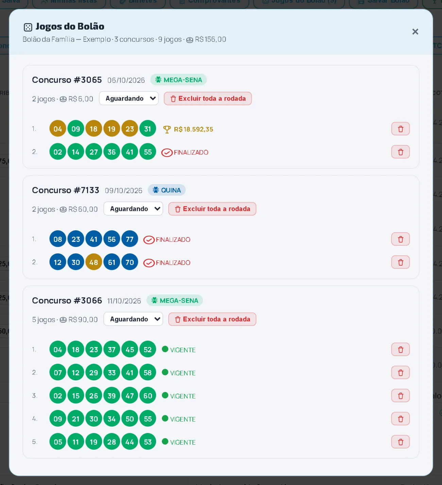
Jogos do bolão. - 3
Para tirar um jogo, use o ícone da lixeira ao lado dele. Excluir toda a rodada apaga o grupo daquele concurso.
6.8 Comprovantes de pagamento e bilhetes
▶ Assistir ao vídeoGuarde as provas: os comprovantes de PIX e as fotos dos bilhetes da lotérica.
- 1
Clique em Comprovantes para ver os comprovantes de PIX que os participantes enviaram pelo celular.
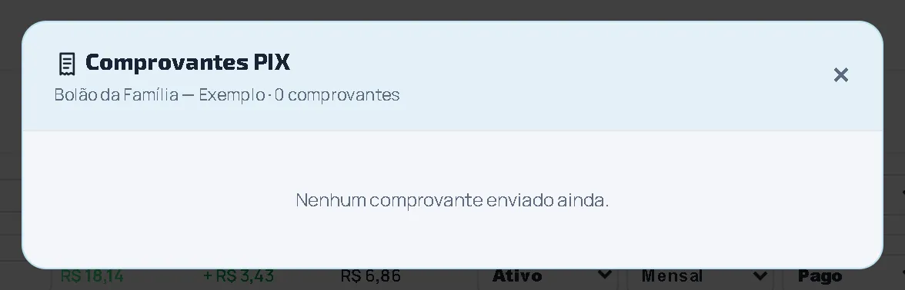
Comprovantes PIX. - 2
Clique em Bilhetes e depois em + Adicionar foto ou PDF para anexar o bilhete que você registrou na lotérica.

Bilhetes do bolão.
6.9 Cadastro dos participantes
▶ Assistir ao vídeoConfira e corrija e-mail, WhatsApp e CPF de todos num só lugar.
- 1
Clique em Cadastro. Abre a lista com os dados de cada participante.
Cadastro dos participantes. - 2
Altere o que precisar. Esses dados servem para os convites, os avisos e os documentos.
6.10 Palpites recebidos e limite
Veja os jogos que os participantes sugeriram pelo celular, aceite ou recuse, e defina um limite de valor.
- 1
Quando alguém envia palpites pelo celular, o botão Palpites recebidos (ao lado de Cadastro) mostra um número com os que esperam a sua análise.
- 2
Clique nele. Veja o Limite por seção, o Total aguardando análise e quanto cada pessoa enviou.
- 3
Para aceitar vários de uma vez, clique em Vincular todos. O programa pede confirmação e diz quantos foram vinculados e quantos ficaram.
- 4
Na Timemania e no Dia de Sorte, se faltar o time do coração ou o mês de sorte, escolha na lista e clique em Salvar; depois vincule.
- 5
Para decidir um por um, clique em Vincular ou Recusar (você pode escrever o motivo; o participante recebe um aviso).
- 6
Para limitar o valor, preencha Limite de palpites por seção (R$) no cartão Administrador e salve o bolão. Em branco = sem limite.
Quer saber mais?
As seções são as três partes da semana em que o bolão joga: segunda e terça, quarta e quinta e sexta a domingo. O limite vale para a soma de todos os participantes em cada uma. Quando o limite é atingido, o participante recebe um aviso no celular e precisa retirar jogos da lista antes de enviar.
6.11 Ativar o bolão
▶ Assistir ao vídeoAtivar fecha o bolão para novos participantes e o libera no celular de quem aceitou o convite.
- 1
Confira a lista de pagamentos. Depois clique em Ativar Bolão (no cartão Administrador).
Ativar Bolão (cartão Administrador). - 2
O programa pede confirmação e mostra quantos participantes pagaram e quantos serão removidos por não terem pago. Clique em OK para ativar.
Confirmação de Ativar bolão.
Quer saber mais?
Quem permanece e já tem conta recebe uma notificação avisando que o bolão está ativo.
6.12 Documentos do bolão
▶ Assistir ao vídeoOs documentos já saem com os dados preenchidos, prontos para imprimir ou salvar em PDF.
- 1
Termos e Condições: o modelo padrão das regras de participação. Ele ajusta sozinho a cláusula da taxa administrativa.
Termos e Condições. - 2
Termo de Constituição: o documento do bolão, com nome, CPF e cotas de cada participante e espaço para assinatura. É gerado depois da ativação. Quem já assinou pelo celular aparece com a assinatura e a data.
Termo de Constituição. - 3
Dossiê do Prêmio: junta, num documento só, o Termo de Constituição, os jogos premiados e os comprovantes de depósito. Útil na hora de receber o prêmio.
Dossiê do Prêmio. - 4
Regras de Funcionamento e Isenção de ITCMD: documento fixo (igual para todos os bolões) que explica as regras gerais e a isenção do imposto sobre a divisão do prêmio.
6.13 Avisar os participantes e mandar mensagens
▶ Assistir ao vídeoTrês jeitos de falar com o grupo.
- 1
Avisar Participantes: manda uma única notificação sobre os jogos novos e os bilhetes anexados desde o último aviso.
- 2
Mensagem (no cartão Participantes): escreva o título e a mensagem para este bolão e clique em Enviar (notificação no celular) ou Abrir no WhatsApp.
Enviar Mensagem. - 3
Mensagens (no alto da tela de Bolões): envia para um bolão específico, um participante (mesmo que ele esteja em vários bolões) ou todos os participantes.
Mensagens gerais.
6.14 Controle de gastos e saldo
▶ Assistir ao vídeoO cartão Controle de Gastos mostra para onde o dinheiro foi.
- 1
Custo das apostas (todas as loterias) soma o que os jogos custaram. Saldo disponível (geral) é a arrecadação menos esse custo.
Controle de Gastos. - 2
Abaixo, o gasto e o saldo por loteria, o histórico de rodadas (uma linha por concurso) e os gastos diários e semanais.
Quer saber mais?
A arrecadação é a soma do que foi pago pelos participantes ativos. O que sobra depois de pagar os jogos fica como saldo para as próximas rodadas.
6.15 Prêmio → Saldo: dividir o prêmio
▶ Assistir ao vídeoQuando o bolão ganha, o botão Prêmio → Saldo divide o prêmio entre os participantes.
- 1
Clique em Prêmio → Saldo. No alto está o Resumo do prêmio: o prêmio apurado (somado dos jogos premiados), o que já foi creditado e o que está disponível para creditar.
Prêmio → Saldo. - 2
Em Creditar prêmio, escolha Manual ou Automático, escreva o valor a creditar (ou clique em Usar total) e, se quiser, a rodada/semana.
- 3
Em Faixas de distribuição do prêmio, confira os limites (você pode mudar). Clique em Salvar faixas se alterar.
- 4
Clique em Creditar ao Saldo. Cada participante recebe uma notificação com a sua parte.
Quer saber mais?
O prêmio é dividido em fatias, pela parte de cada cota (prêmio ÷ cotas pagas), como no imposto de renda: Faixa 1 (até R$ 15,00 por cota, padrão) vira crédito automático no saldo. Faixa 2 (até R$ 2.428,80 por cota, padrão) vira reserva para o próximo bolão (até o valor da cota) + o resto em PIX. Faixa 3 (acima disso) é PIX direto: o programa só registra, a transferência é por fora. Cada pessoa recebe pela quantidade de cotas que tem.
6.16 Transferir saldo para outro bolão
▶ Assistir ao vídeoSobrou saldo? Passe para o próximo bolão, respeitando as cotas de cada um.
- 1
No bolão de origem, clique em Transferir Saldo. A janela mostra o saldo deste bolão.
Transferir saldo. - 2
Escolha o bolão de destino e o valor a transferir. Clique em Simular divisão para ver quanto vai para cada pessoa.
- 3
Confirme em Transferir saldo.
Quer saber mais?
A transferência é proporcional às cotas que cada pessoa tem no bolão de origem. No destino, cada um passa a ter as mesmas cotas daqui e o saldo completa só o que faltar para pagar essas cotas. Pessoas que não eram do bolão de origem não recebem esse saldo. Aplicar Reservas Pendentes (dentro de Prêmio → Saldo) usa as reservas guardadas de prêmios anteriores no bolão novo.
6.17 Relatório e impressão do bolão
▶ Assistir ao vídeoUm relatório completo do bolão, para ver na tela ou imprimir.
- 1
Clique em Imprimir (cartão Participantes). Escolha Todos os jogos vinculados ou Só os jogos premiados e clique em Gerar Relatório.
Imprimir Relatório do Bolão. - 2
O relatório traz: o resumo financeiro, o administrador, a tabela de participantes, o prêmio por loteria e por participante, o somatório dos prêmios, os jogos (com os premiados destacados) e o histórico de rodadas.
Relatório do bolão. - 3
Use o botão Imprimir do relatório para enviar à impressora ou salvar em PDF.
6.18 Participantes avulsos (sem bolão)
▶ Assistir ao vídeoCadastre contatos antes de ter o bolão e use depois.
- 1
Na tela de Bolões, clique em Participantes.
- 2
Preencha Nome, E-mail, CPF, WhatsApp e a chave PIX e clique em Adicionar. Na lista aparecem os já cadastrados, com os ícones para editar, convidar e excluir.
Participantes avulsos.
7. Sua conta e cuidados
A área do participante, a administração e os backups.
7.1 Ver como participante
▶ Assistir ao vídeoO botão Participante (barra de cima) abre a sua área de participante, a mesma do app do celular.
- 1
Clique em Participante. Aparecem os bolões em que você participa, os avisos, os relatórios e o histórico.
Área do participante. - 2
Para voltar ao programa de organizador, use o botão Organizador no alto da área.
Quer saber mais?
O cadastro de participante novo é feito no app do celular, por convite. Veja o Manual do Participante.
7.2 Painel de Administração
▶ Assistir ao vídeoO botão Admin só aparece para contas de administração.
- 1
Clique em Admin. Veja Solicitações de Nova Senha e Meus participantes (o acesso de cada um e o prazo).
Painel de Administração. - 2
Para cada pessoa, escolha o período (Trimestral, Semestral, Anual, Permanente) e clique em Conceder/Renovar. Revogar retira o acesso.
Quer saber mais?
O administrador comum só enxerga os seus participantes. Quem esquece a senha aparece em Solicitações de Nova Senha: gere o link de troca e envie a ela.
7.3 Backup: guardar e restaurar tudo
▶ Assistir ao vídeoFaça um backup de vez em quando.
- 1
Na barra FERRAMENTAS, clique em Exportar Backup. O programa salva todos os seus jogos e bolões num arquivo.
- 2
Para restaurar (por exemplo, num computador novo), clique em Importar Backup e escolha o arquivo.
Perguntas frequentes
O programa atualiza sozinho?
Sim. Ele procura versão nova ao abrir e a cada 30 minutos, baixa em segundo plano e mostra Instalar e Reiniciar.
Preciso estar logado para ver o Painel Inicial?
Não. O Painel Inicial é aberto a todos. Para abrir uma ferramenta (gerar jogos, bolões, estatísticas completas) é preciso entrar.
Qual é a diferença entre os modos de geração?
Filtrado e Score usam estatística. Aleatório Puro, CSPRNG e PRNG (Seed) sorteiam sem estatística (muda só o gerador de números aleatórios; o PRNG repete os mesmos jogos com a mesma semente). Fechamento gera muitos jogos para cobrir uma faixa.
Jogo com pontuação (score) alta ganha mais?
Não. O score só diz o quanto o jogo combina com as estatísticas do período. A loteria é sorteio: o resultado não depende do passado.
Qual é a diferença entre "prazo de pagamento" e "ativar o bolão"?
O prazo de pagamento é até quando a cota pode ser paga. Ativar fecha o bolão para novos participantes e remove quem não pagou. O encerramento do bolão em si é o fim da semana.
O que acontece com quem não pagou quando eu ativo o bolão?
É removido do bolão (o cadastro da pessoa continua). Por isso, confira os pagamentos antes de ativar.
Posso desfazer "Ativar bolão"?
Não. A confirmação avisa que a ação não pode ser desfeita.
Como divido o prêmio?
Use Prêmio → Saldo: o programa divide pela parte de cada cota e avisa cada participante (capítulo 6, seção "Prêmio → Saldo").
Posso passar o saldo de um bolão para outro?
Sim, com Transferir Saldo. É proporcional às cotas do bolão de origem; só quem era do bolão de origem recebe.
Os participantes recebem as notificações?
Só quem ativou as notificações no app do celular. As do iPhone funcionam depois de compartilhar o app para a Tela de Início.
Onde fica o manual do celular?
No Manual do Participante e no Manual do Gestor, nos próprios apps do celular.
Glossário — as palavras do app
- Bolão
- Um grupo de pessoas que divide o custo de apostas e o prêmio.
- Cota
- A parte de uma pessoa no bolão. Quem tem mais cotas paga mais e recebe mais.
- Rateio
- A divisão de um valor entre as pessoas, na proporção das cotas.
- Concurso
- Cada sorteio da loteria tem um número. É esse número que identifica o sorteio.
- Dezena
- Cada número escolhido no volante (de 01 até o último da loteria).
- Quente / Fria
- Número que saiu mais (quente) ou menos (frio) do que o esperado no período.
- Atraso
- Há quantos concursos um número não sai.
- Pausa
- O intervalo, em sorteios, entre duas aparições do mesmo número.
- Score
- A nota (0 a 100) que resume o quanto um jogo combina com as estatísticas do período.
- Fixos
- Números que você obriga a entrarem em todos os jogos.
- Excluídos
- Números que você proíbe de entrarem nos jogos.
- Aposta Espelho
- Um segundo jogo, com números diferentes, feito para cada jogo principal.
- Teimosinha
- Repetir o mesmo jogo por vários concursos seguidos.
- Semente (Seed)
- Um texto ou número que, no modo PRNG, faz o programa gerar sempre os mesmos jogos.
- Volante
- O papel da Caixa onde se marcam os números. O programa imprime já preenchido.
- PIX
- A forma de pagamento usada para pagar a cota e receber prêmios.
- Ativar o bolão
- Fechar o bolão para novos participantes e liberá-lo no celular de quem aceitou.
- Prêmio → Saldo
- A função que divide o prêmio entre os participantes, em faixas.
- ITCMD
- Imposto estadual sobre doações e heranças. O documento "Regras de Funcionamento e Isenção de ITCMD" explica por que a divisão do prêmio entre os participantes não é doação.